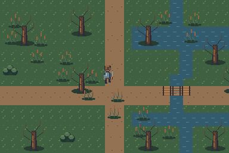

Search the Art Bible
Search works locally, including offline.
Art Bible · Regional standards
Marshlands
Stillness and uncertainty, with visible safe ground.
Edition 0.1.0 · Owner review pending for new reference art
On this page
Identity and emotional tone
Stillness and uncertainty, with visible safe ground.
This image is an original unnamed tile-based study, not a canonical authored location. Its palette and layout require owner art review. Reuse the common source grid and character scale before creating region-specific variations.

Regional production specification
| Dimension | Direction |
|---|---|
| Terrain palette | Marsh ground, mud, shallow water and raised paths |
| Vegetation palette | Muted reeds and low-value leaves, dead trunk accents |
| Common materials | Wet timber, dark earth, subdued stone |
| Architecture | Raised walkways and modest shelters use common beam and deck modules. |
| Resource objects | Reeds, herbs, fish and waterlogged wood |
| Lighting | Cool low contrast overall; keep actor edges and boardwalk edges clear |
| Weather | Rain and local fog; do not cover the entire ground with haze |
| Landmark strategy | A dead trunk cluster beside an uninterrupted water opening |
| Required tile families | Mud-water shore, raised deck, path and bank transitions |
| Reusable props | Reeds, dead trees, roots, mushrooms and low stones |
| Environmental hazards | Shallow/deep or unsafe water must have a separate readable boundary |
| Combat readability | Keep reeds below attack silhouettes near combat routes |
| Living Region variation | Broken boardwalk to repaired crossing; overgrown site to cleared ground |
Build a reusable regional kit
Begin with the terrain family, all its transitions and a mixed route test. Add three strong prop silhouettes and one modular structural motif. Use the same native pixels as a 32-pixel character; alter color relationships and object grouping instead of shrinking props. The example scene is reproducible from the scene-map JSON.
Propose palette remaps in material groups and preserve their value order. Do not recolor metal, skin or danger indicators accidentally when changing regional grass. Keep weather presentation separate from editable local colors.
Approval scene
Submit a native-size path crossing, water or cliff boundary where relevant, one quiet exploration frame and a crowded combat/objective composition. Inspect actor edges, resource identity and foreground coverage. Add at least one state swap with fixed origins and connection pixels.
Before approval, list kit gaps that require newly authored tiles or props. The study demonstrates reuse; it does not certify that every production landmark, weather state or structure already exists.